CS184/284A Spring 2025 Homework 2 Write-Up
Link to webpage: cal-cs184-student.github.io/joel-castro/
Link to GitHub repository: cal-cs184-student/sp25-hw2-whats_up_dog

Overview
In the following write-up, I describe my journey to creating a working MeshEdit tool. At a high-level, this means creatings modems for displaying 3D geometry. For instance, using bezier control-points to define 3D curves or "patches", or a traingle-mesh-based editor that uses edge splitting and manipulation to implement a subdivision scheme that gets meshes to appear at desired smoothness. I am really happy with the insights I gained from the project on data structures used to represent geometry (efficiently). Get ready to deal with a lot of pointers!
Section I: Bezier Curves and Surfaces
Part 1: Bezier curves with 1D de Casteljau subdivision
Castelijau is an algorithm for linearly interpolating every point on the Bezier curve corresponding to a set of control points. My implementation was constructed using the following logic:
Given a set of control points: \begin{equation} \mathcal{C} = \{ c_1, c_2, \dots, c_n \}, \quad c_i \in \mathbb{R}^d \end{equation} We assume they are ordered such that: \begin{equation} x_1 \leq x_2 \leq \dots \leq x_n, \quad \text{where } c_i = (x_i, y_i). \end{equation} We compute the set of Bézier curve points, \( \mathcal{B} \), using the following procedure:
- Initialization: \( \mathcal{B} \gets \emptyset \).
- For each parameter \( t \in (0,1) \), perform De Casteljau's algorithm:
- Initialize \( \mathcal{C'} = \mathcal{C} \).
- While \( |\mathcal{C'}| > 1 \), compute the intermediate points iteratively: \begin{equation} \mathcal{C'} = \{ \text{lerp}(c_i, c_{i+1}, t) \mid i = 1, \dots, n-1 \} \end{equation} The above equation describes my implementation of the BezierCurbe::evaluateStep function, where the linear interpolation function is defined as: \begin{equation} \text{lerp}(c_1, c_2, t) = (1 - t)c_1 + t c_2. \end{equation}
- The final interpolated curve point \( \mathcal{C'} \) is added to \( \mathcal{B} \).
- Return the computed Bézier curve points: \begin{equation} \mathcal{B} = \bigcup_{t \in (0,1)} \{\mathcal{C'}_t\} \end{equation}
Here is a demonstration of a 6-control-point Bezier curve.
|
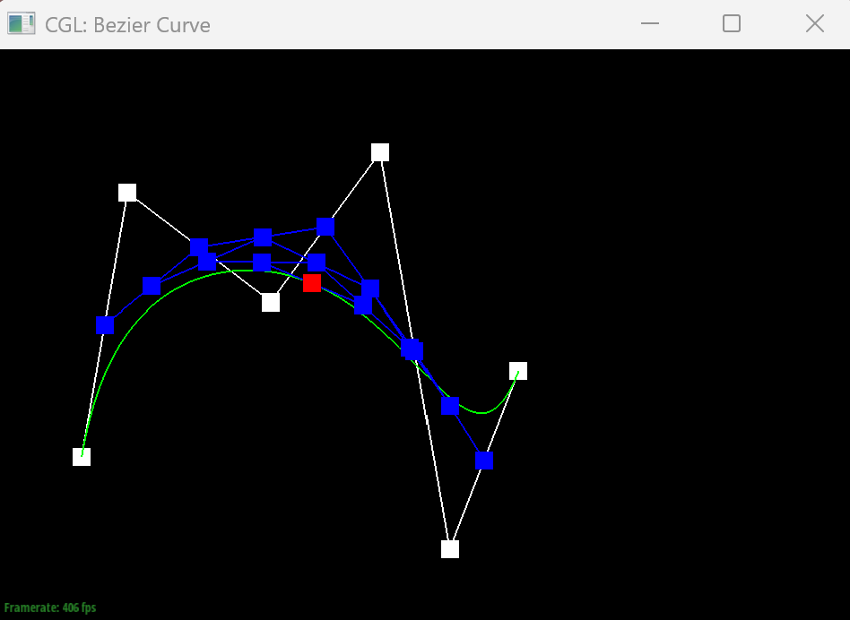
|
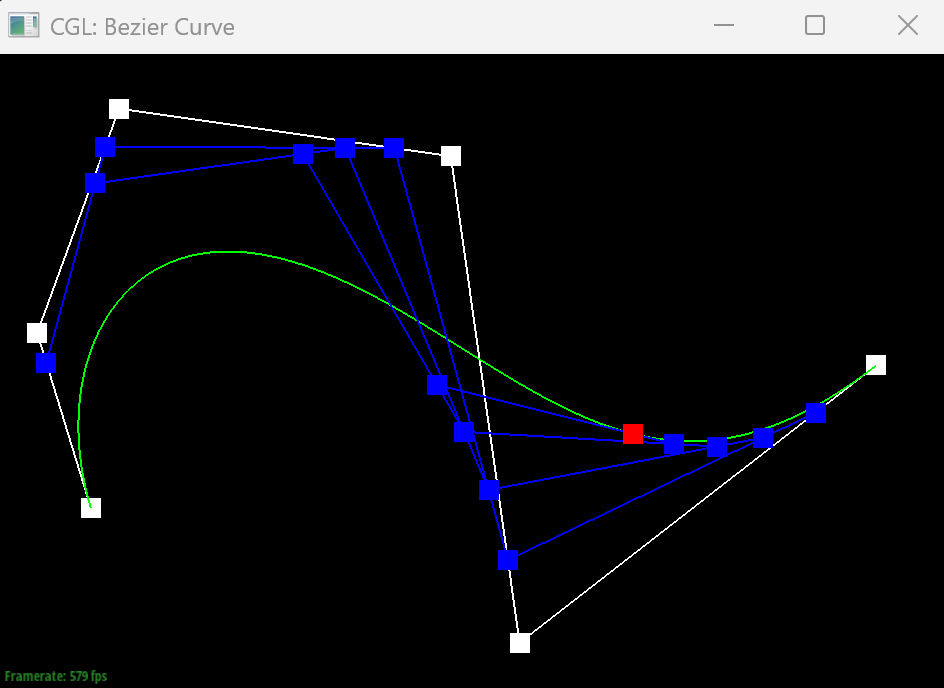
|
And here is the same Bezier curve as we step through the levels of evaluation:
|
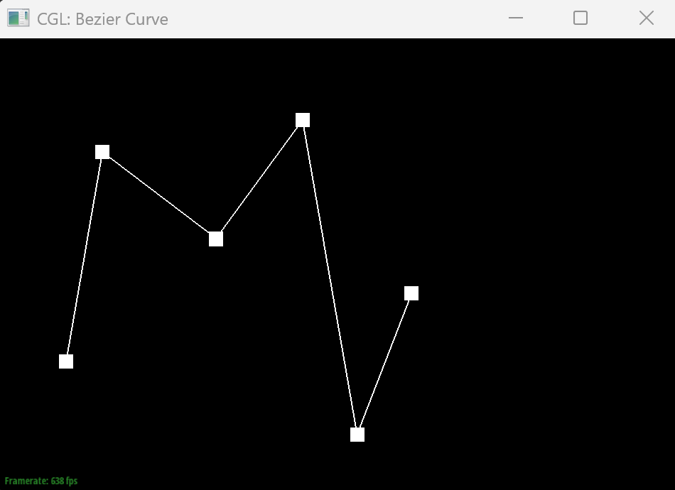
|
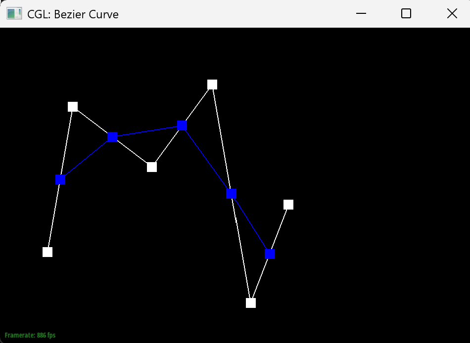
|
|
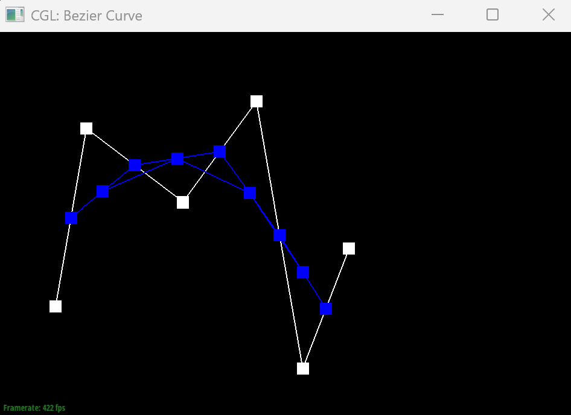
|
|
|
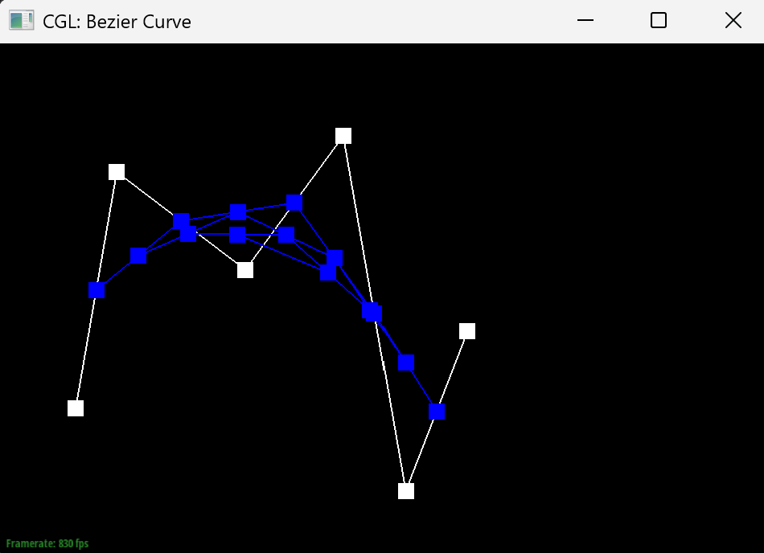
|
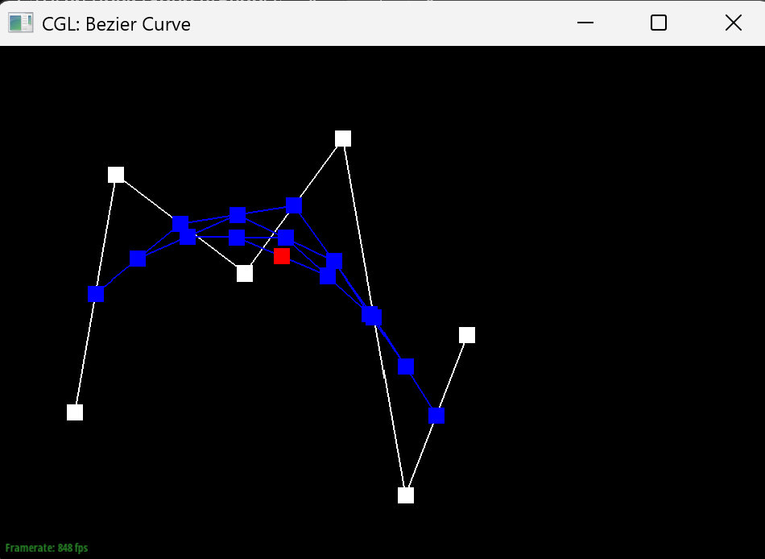
|
Part 2: Bezier surfaces with separable 1D de Casteljau
Bézier surfaces extend to Bézier curves by increasing the dimensionality of the control points to \( d=3 \). Given a grid of control points:
\begin{equation} \mathcal{C} = \{ c_{i,j} \mid i \in \{1, \dots, m\}, j \in \{1, \dots, n\} \}, \quad c_{i,j} \in \mathbb{R}^3 \end{equation} and normalized surface parameters \( (u, v) \) where: \begin{equation} (u, v) \in [0,1] \times [0,1], \end{equation} we compute a point \( S(u,v) \) on the Bézier surface as follows:
- Compute intermediate control points by evaluating each Bézier curve along \( u \): \begin{equation} \mathcal{C'}_i = \text{DeCasteljausAlgorithm}(\{ c_{i,j} \}_{j=1}^{n}, u), \quad i = 1, \dots, m \end{equation}
- Interpolate over the computed points along \( v \): \begin{equation} S(u,v) = \text{DeCasteljausAlgorithm}(\{ \mathcal{C'}_i \}_{i=1}^{m}, v). \end{equation}
Thus, we first interpolate every Bézier curve in the patch at \( u \), then interpolate across the resulting points along \( v \), yielding a single point \( S(u, v) \) on the surface. The Bézier surface is defined over all points \( (u, v) \) satisfying (u, v) \in [0,1] \times [0,1]. To generate a triangular mesh representation of the surface, one can sample \( (u,v) \) at discrete intervals and use the points to rasterize an approximation.
Here's a cool rendering using Bezier patches:
Section II: Triangle Meshes and Half-Edge Data Structure
Part 3: Area-weighted vertex normals
My implementation involved, given a vertex, iterating through all faces/triangles incident to that vertex. Using the halfEdge data structure methods/variables, per triangle, I accessed the positions of all 3 vertices (call them P0, P1, and P2) that composed it. Next, I defined vectors AB and AC, equal to P1 - P0 and P2 - P0 respectiveley. The normal vector of any given triangle was given by the cross product AB x AC, and the area by ||AB x AC||/2. Multiplying corresponding triangle areas and normals and adding them up accross all incident triangles resulted in the desired (unormalized) area-weighted vertex normals. All that was left to do was normalize this sum of weighted vectors for the final returned area-weighted vertex normal.
Comparing teapot shading with and without vertex normals.
|
|
|
Part 4: Edge flip
I updated the pointers of each mesh element relevant to the flip according to the diagram below. I detail the state of all relevant pointers before and after the flip operation.
Initially, I had only written out these changes for halfedges, and the resulting implementation resulted in holes in the mesh. After also working out the pointer logic for edges, vertices, and faces, it became clear that the only other additional relevant change was the half-edge associated with each face. As per the diagramming logic I drew out, the half-edges corresponding to either face actually flip, so this had to be reflected in my implementation.
The description of the flipping problem scared me straight enough to make my diagram quite thorough, as a result, there wasn't much debugging!Here is the teapot before and after edge flips:

|
|
Part 5: Edge split
My edge-splitting implementation followed much the same process as my flip operation implementation. I wrote out the pointers of pointers to/from neighboring elements before and after the flip operation. I concluded that I would need to add 6 new half-edges, 3 edges, 2 faces, and 1 vertex to accomplish this task. Their connections to maintain the desired relationships are described in detail in the diagram:
Once again, virtually all my "debugging" was done before coding when writing out the pointer updating logic. Even still, I encountered some minor issues, including disappearing faces (1), new vertices spawning far away from the desired edge midpoint (2), and not being able to remove seemingly redundant pointer re-assignments (3). A re-read of the code revealed that issue (1) turned out to be simply because I was continuing to modify existing face instances instead of creating new ones. Creating new face instances, f3 and f4, resolved this. Issue (2) was simply because I overlooked setting the position for the new vertex. To resolve the issue, I made sure to make the new position the average position between the vertices incident to the given edge e0. Finally, "issue" (3) wasn't really an issue as I simply put back what I thought was a redundant pointer re-assignment, and it went back to working. Specifically, this was the line(s) that I uncommented:
//I'm confused about why I need to set f1's halfedge to h
//according to my diagram (and the re-written version below), it should be redundant
//f1: e0->halfedge()->face()->halfedge() = e0->halfedge();
//otherwise, wouldn't this mean that, for the given edge, while it points to a face, that face does not point back to it
f1->halfedge() = h; //(3)
//e0->halfedge()->face()->halfedge() = e0->halfedge();
f2->halfedge() = h_twin; //(same question (3) goes for h_twin here)
See the effects of the edge splitting here:
|
|
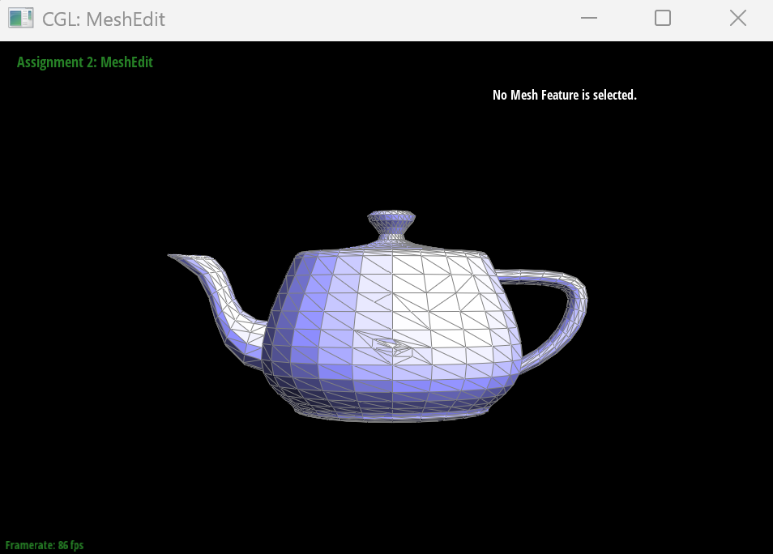
|
Part 6: Loop subdivision for mesh upsampling
No amount of diagramming could make this task less painful.... Nevertheless, it is finally done, and here's how I went about it: Adopting the suggested separation of tasks, I first (1) computed new positions for existing vertices in the input mesh, using the Loop subdivision rules, and store them in Vertex::newPosition. To accomplish this, I iterated over vertices and used the half-edge data structure to access all necessary neighboring elements to compute things like the `originalNeighborPositionSum`. Also, I "marked" each vertex as being from the o.g. mesh by setting their isNew attribute to false. Secondly, I (2) computed the updated vertex positions associated with edges and stored them in their respective Edge::newPosition attributes by iterating over all edges. Next, I (3 & 4) applied splitting operations to all edges by calling my implementation in part 4, and I flipped new edges to the appropriate orientation utilizing my implementation in part 5. This was achieved by first iterating over all edges and setting their isNew attribute to true, taking note of which new edges are actually just an original edge split in half (and setting their isNew=false after the fact to prevent infinite loops). Moreover, only edges that were new and connected new to old vertices were flipped. Finally, I set the position of each vertex to its corresponding computed new positions (that were temporarily stored in the newPosition attribute), and I reset the isNew attributes in preparation for the next subdivision. There were plenty of bugs this time around, but the most notable was incorrect vertexPositions; here is some cool bug art that resulted:
I can't with the holes- I was actually gagging trying to debug this.... Still, I managed to figure it out by printing out positions as they were set at various locations (e.g., new vs old vetex position calculations) and using this to narrow down the root cause. The image above was the result of new vertices never being updated out of the default position (0, 0, 0). Once diagnosed, it was a simple update from the Edge::newPosition attributes they were saved to, over to the actual position attributes of the new vertices that fixed it. You'd think that would be the end of it, but it turns out that some of the so-called "redundant" pointer reassignments in parts 4 and 5 were not all that redundant as they were causing subdivision artifcats past the first subdivion. After trying just about everything, in my despair, I uncommented these reassignments and was pleasantly surprised that this resolved the issue. Remember kids, "Correctness is more important than optimization" :).
Finally, here is my corrected implementation at work. The more we subdivide a mesh, the smoother it appears to become. In other words, sharp edges become more and more rounded:
|
|
|
|
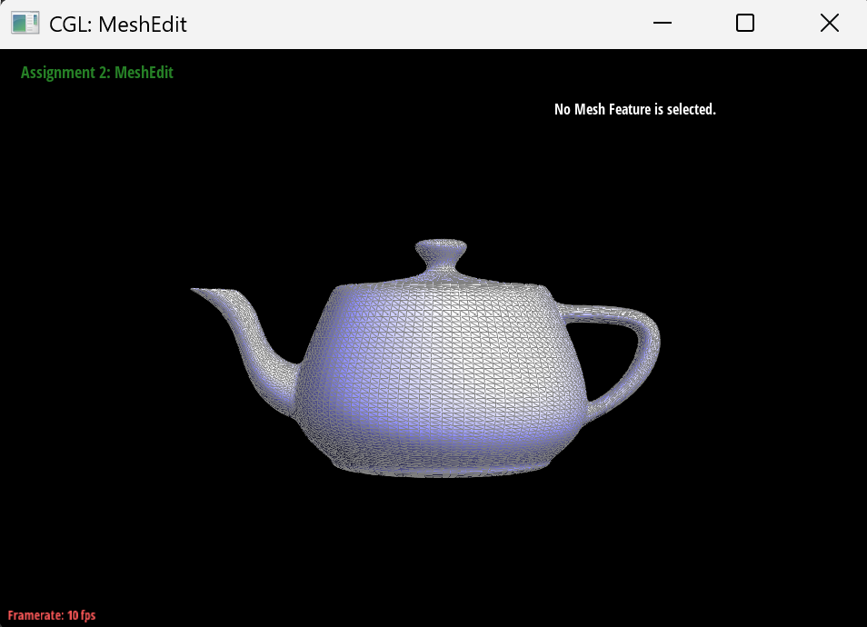
|
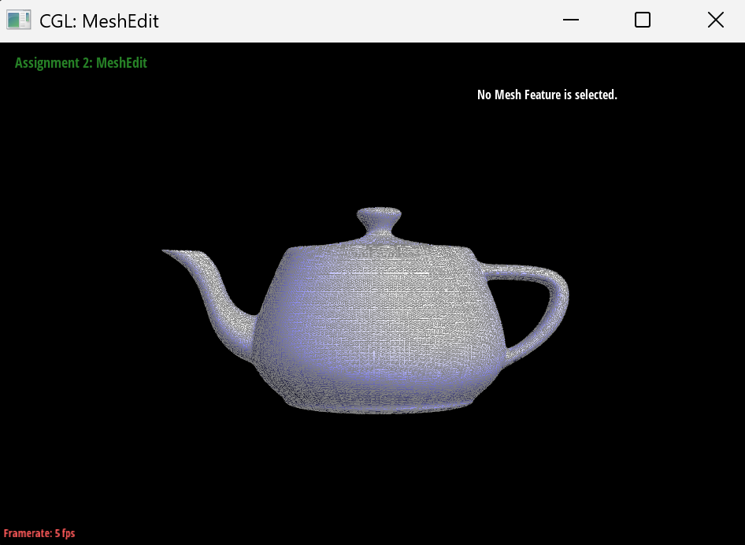
|
The same upsampling implementation applied to a cube mesh:
|
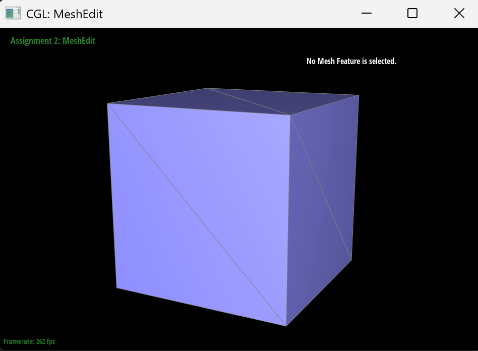
|
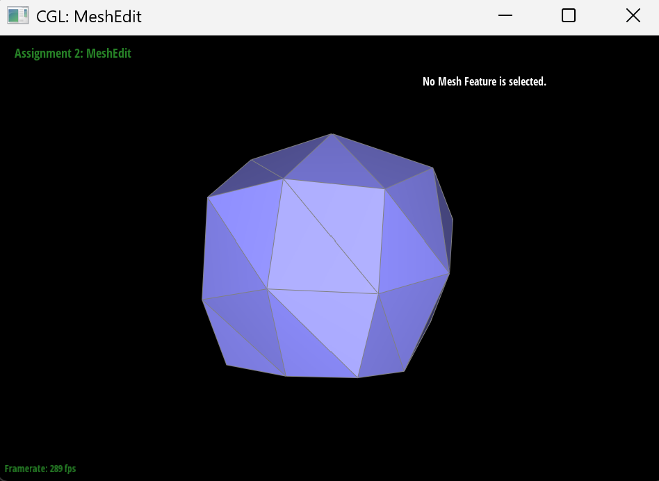
|
|
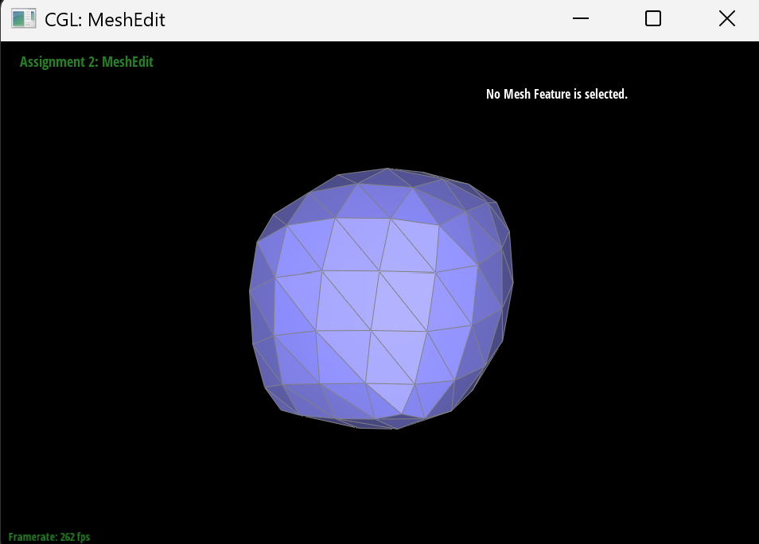
|
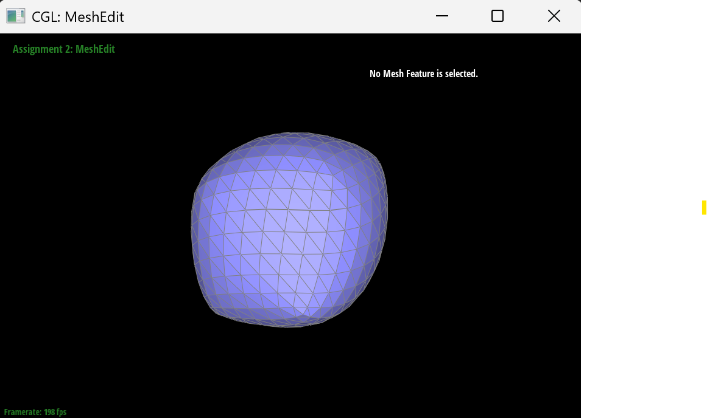
|
|
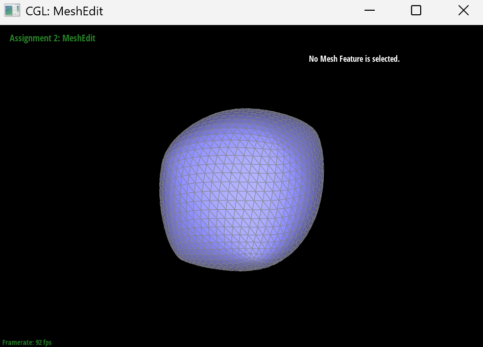
|
Hmm, that cube is turning into much more of a bumpy asymmetric ball the more we subdivide. What if we wanted to maintain symmetry and retain more of the original shape? Well, we can preprocess the cube with splits in flips like so:
|
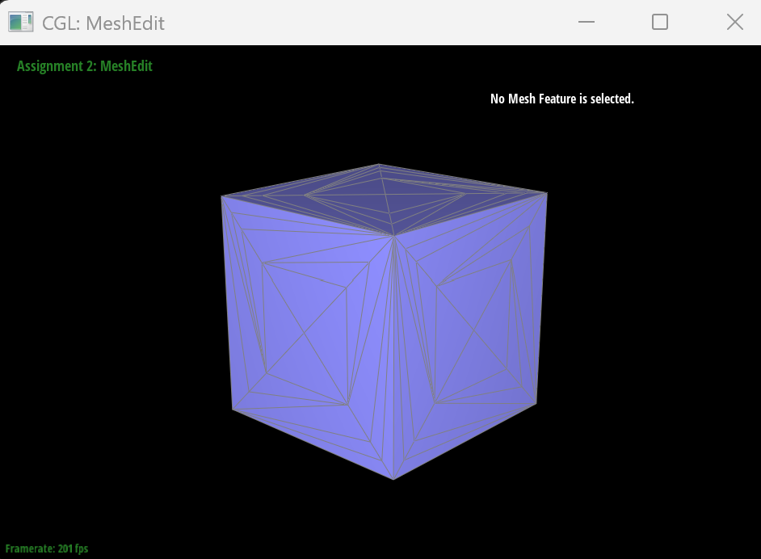
|
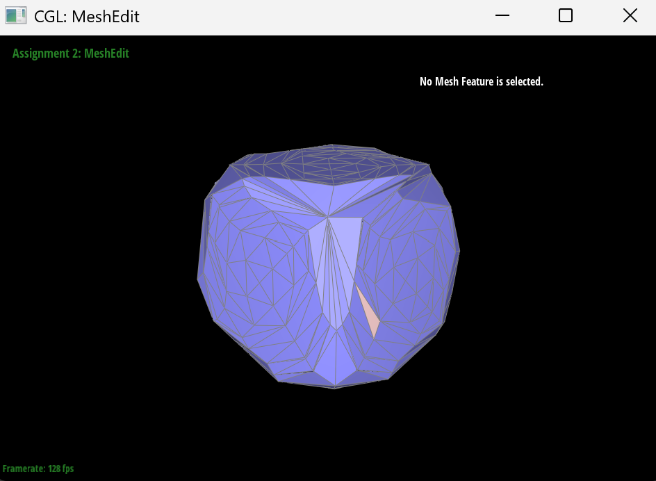
|
|
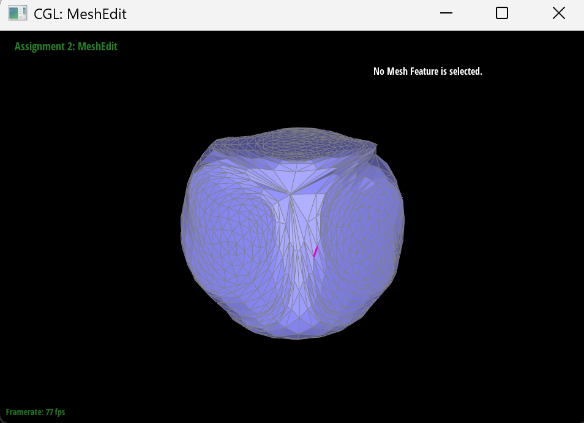
|
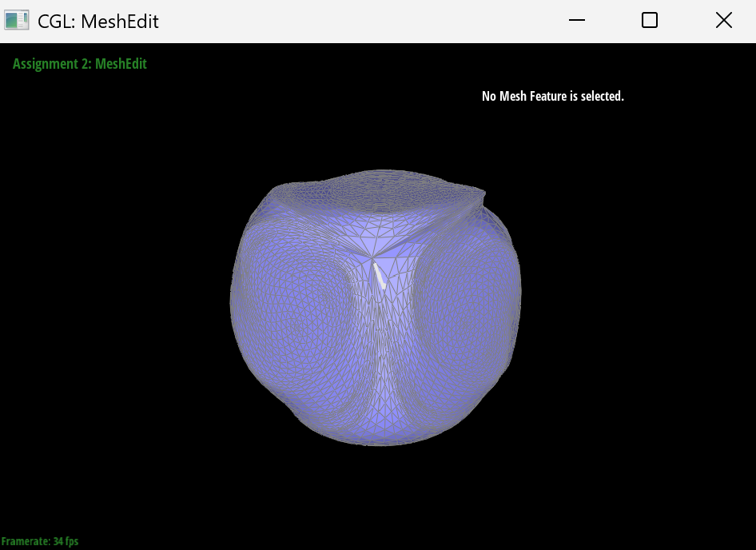
|
|
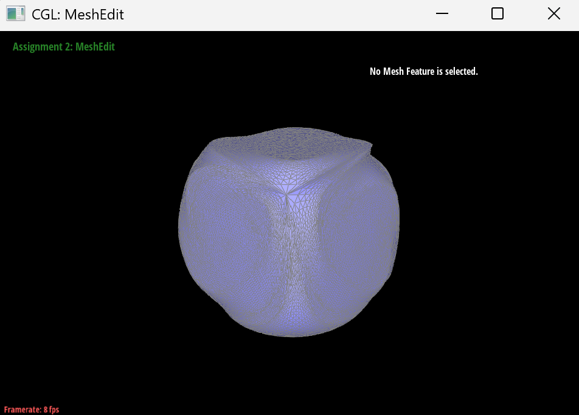
|
I placed more edges near the corners of the cube (splitting previously split edges until there were many edges near the corners). By doing this, the new vertex points that are positioned at the ~average position of their neighbors are now going to be placed closer to the initial control cage than before (since more new points near these edges means the averages of neighbors will be closer to there). As a result, subdividing here still maintained much of the box shape, and the shape of the box is far more symmetric.
Section III: Art Competition: Model Something Creative
>Inspired by one of my all-time favorite shows, The Owl House, witness King Clawthorne in 3D format!! But wait, only his head seems to have survived the projection onto 3D, how unfortunate (for him that is--- for me, it saved me who knows how many hours of my life). The sculpting and retopologizing was done in Autodesk Maya, and then I made my final export to .dae (Collada) format via Blender. Finally, I created a uniform light blue shader by messing with the color and light parameters of the exported .dae file in a text editor.